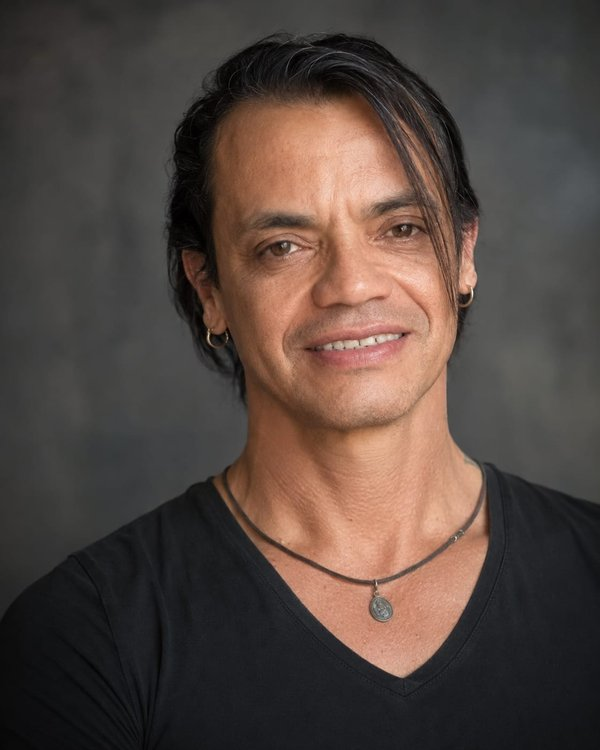
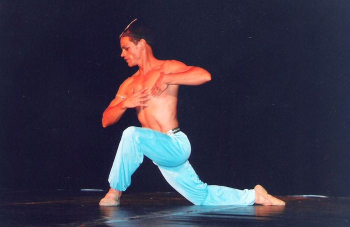
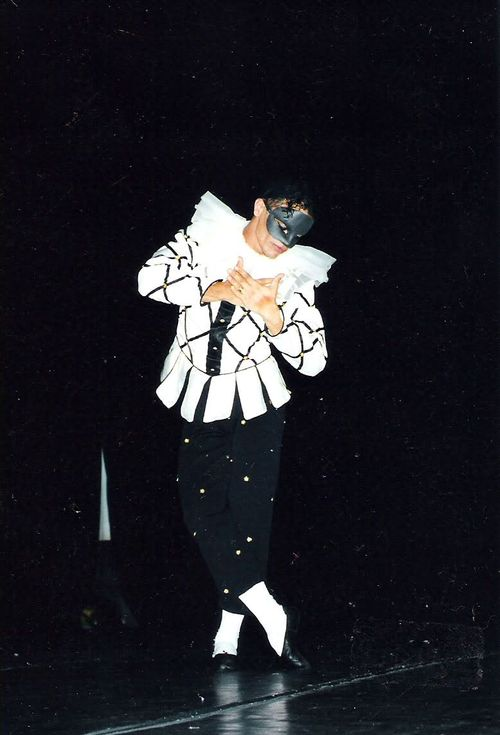
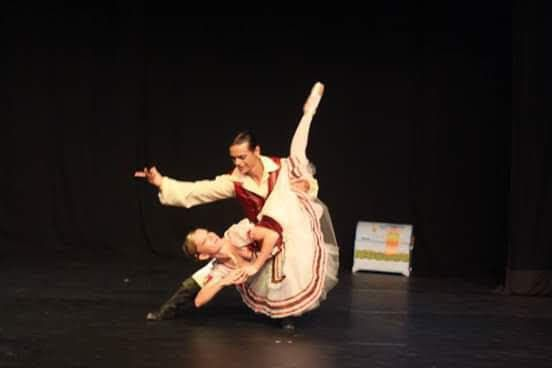
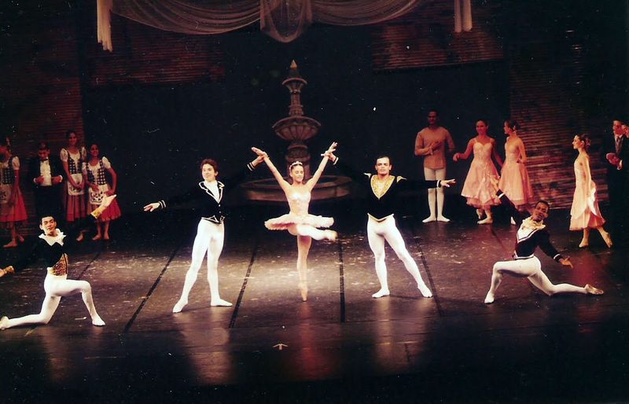
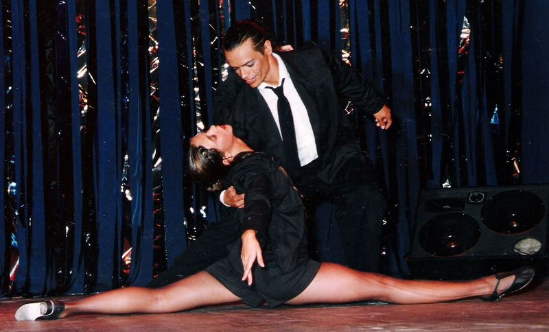
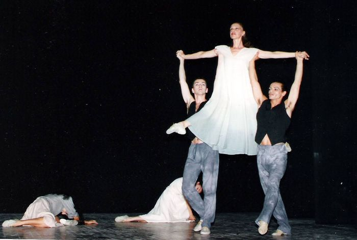
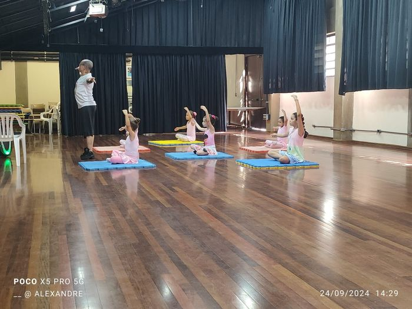

Osasco, São Paulo · 1986 — 2026
40 Anos
em Dança
Wanderlei Antonio de Oliveira
Bailarino · Professor de Ballet · Produtor Cultural
Quatro décadas em dança

Wanderlei Antonio
Osasco · SP · Brasil
Bailarino com formação clássica e atuação consolidada em ballet de repertório, dança contemporânea e dança dramática. Ao longo de quatro décadas, atuou como intérprete em produções de companhias brasileiras e em apresentações no exterior.
Como professor, ministra aulas de ballet clássico e técnica para iniciantes, intermediários e avançados, atendendo crianças, jovens e adultos. Como produtor cultural, concebe, monta e executa espetáculos de dança, oficinas e projetos contemplados por editais públicos.
Atualmente baseado em Osasco, São Paulo, mantém atividade ativa em sala de aula e em produção artística.
Atuação Profissional
- Intérpreterepertório clássico, contemporâneo e dramático
- Professor de Balletaulas regulares, particulares e oficinas
- Produtor Culturalespetáculos, projetos e captação por edital
- Coreógrafocriação autoral e remontagem de repertório
Ballet de repertório
Atuação em obras centrais do repertório clássico universal, com domínio das variações masculinas e dos principais pas de deux do grande ballet.

O Corsário
Variação masculina · Solo

Harlequinade
Solo cômico

Don Quixote
Pas de deux

A Bela Adormecida
Pas de quatre · Cena de corte

Dança Contemporânea
Coreografia de grupo · Companhia

Expressão Cênica
Dança dramática · Pas de deux
Em movimento
Registros selecionados de coreografia, repertório contemporâneo e duetos de palco. Material que documenta direção artística, técnica e presença cênica.
Em destaque
Duo
Festival de Dança de Joinville · Pas de deux
Apresentação em um dos mais importantes festivais de dança da América Latina. O Festival de Dança de Joinville reúne anualmente milhares de bailarinos e companhias, e é reconhecido como uma das maiores mostras de dança do mundo.
Portfólio audiovisual completo, com registros de espetáculos, ensaios e apresentações, disponível para curadores, produtores e instituições mediante solicitação.
Formação e direção artística

Aulas de ballet clássico baseadas em metodologia tradicional, com foco em postura, técnica de barra, centro e diagonais. Atendimento a alunos a partir dos 5 anos.
Oficinas de dança contemporânea e expressão corporal para grupos e instituições, com programas adaptáveis à faixa etária e ao nível técnico do grupo.
Direção e produção de espetáculos de dança, incluindo concepção, coreografia, ensaios e captação de recursos via leis de incentivo e editais municipais e estaduais.
Aulas Particulares
Ballet clássico para iniciantes, intermediários e avançados
Oficinas e Workshops
Programas para escolas, instituições e grupos culturais
Coreografia
Criação autoral e remontagem de repertório clássico
Espetáculo em dois atos
Espetáculo Comemorativo
40 Anos em 2 Atos
Espetáculo autoral que percorre quatro décadas de trajetória artística, reunindo obras do repertório clássico e criações contemporâneas em uma narrativa única. Voltado para teatros, festivais e instituições culturais interessadas em produções de dança com forte trajetória pedagógica e artística.
I.
Primeiro Ato
A Memória do Palco
Variações e pas de deux do repertório clássico universal: O Corsário, A Bela Adormecida, Harlequinade, Don Quixote.
II.
Segundo Ato
O Movimento Que Continua
Coreografias originais desenvolvidas com alunos e colaboradores, em diálogo com a dança contemporânea.